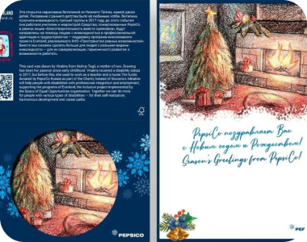

Новости
Тема
Ура! Новое партнерство — с PepsiCo
Everland совместно с PepsiCo приняли участие в акции «Благотворительность вместо сувениров»
Тема
Трехдневный интенсив для КСО-менеджеров «Бизнес и инклюзия: как строить эффективные программы»
Эксперты с инвалидностью, представители бизнеса и некоммерческих организаций поговорили о том, что такое инклюзия, рассмотрели подходы к трудоустройству людей с инвалидностью, обсудили проблемы, к которым нужно быть готовым, и поделились успешными кейсами
Тема
Тестируем супермаркеты на доступность
Everland совместно с торговой сетью «Перекресток» провели аудит продуктовых магазинов на доступность для людей с разными видами инвалидности